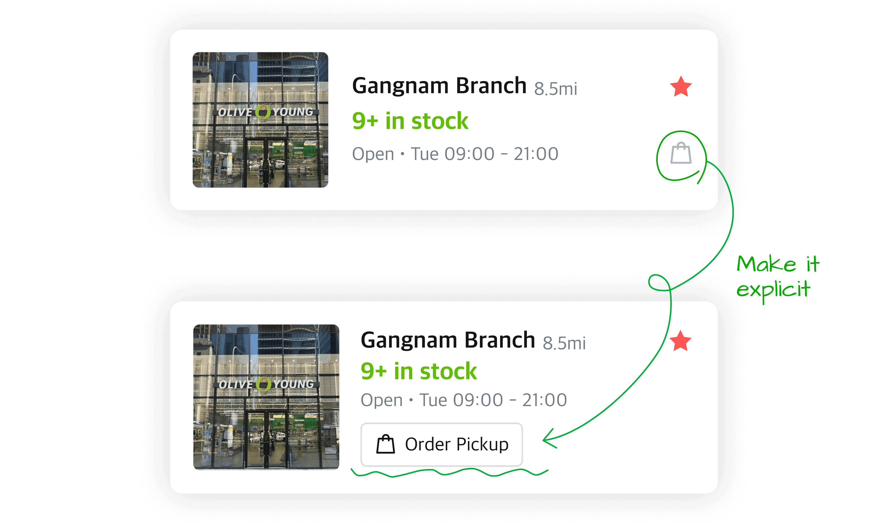
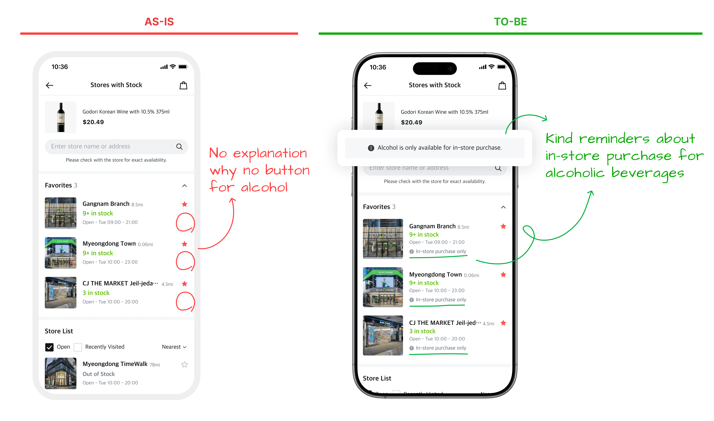

1. Strong engagement, weak add-to-cart
Active shopping behavior was high, but add-to-cart remained low.


Contributions
Problem
Among users checking stock availability, 51.5% took active shopping actions such as searching, filtering, or selecting store cards. However, the interface did not clearly guide these high-intent users toward pickup.

Behavioral signals
Active shopping behavior was high, but add-to-cart remained low.
Despite strong store-detail views, over 80% of users returned to the previous page within 1–2 minutes.

UX analysis
The pickup action competed with other information and was easy to miss.

Users frequently selected store cards expecting the next step toward purchase, but the interaction led them elsewhere.

Different stock and pickup conditions were not translated into clear, contextual actions for users.

Goals
Help customers move from checking stock to ordering pickup without unnecessary detours.
Make pickup recognizable at a glance.
Surface available pickup options in the list.
Tell customers why pickup is unavailable.
Final Solution · 01
Replace the subtle bag icon with an explicit pickup button, so customers can recognize the action before tapping.

Final Solution · 02
Tailor store cards to stock and pickup eligibility. Add a pickup filter so customers can find eligible stores directly from the list.
Final Solution · 03
For in-store-only products, replace the unexplained missing button with a clear purchase restriction message.

Success Metrics
Track whether a clearer pickup action translates into completed orders and business value.
Conversion from the stock-checking page.
Total number of pickup orders.
Total amount spent on pickup orders.
Result
Pickup conversion improved, while total pickup order volume and value both rose by more than 20%.
321.3%
Stock-page pickup conversion
125.2%
Total pickup order volume
128.2%
Total pickup order value
Figures as reported in the original case study.
Reflection
This project showed me how small points of confusion can stand between purchase intent and an order. Following unexpected behavior in the data helped reveal an opportunity that a broader redesign had missed.